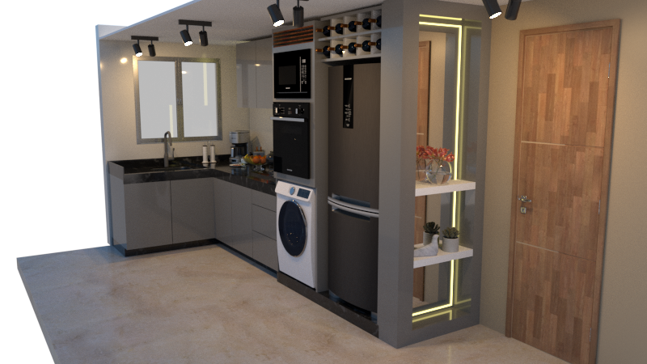

Projetos
Trabalhos acadêmicos e profissionais. Clique em um projeto para ver os detalhes.

Sistemas prediais · Poli-USP · 2026
Climatização (HVAC) de escritório em Brasília
Carga térmica de 66.276 W, 2 UTAs por andar, chiller de água gelada, dutos e diagrama unifilar.
Ver projeto →
Projeto completo · Profissional · 2025
Chácara em Igaratá
Residência de 117,75 m²: projeto arquitetônico, estrutural preliminar e esgoto sanitário.
Ver projeto →
Arquitetura · IFSP
Residência unifamiliar
Do programa de necessidades ao detalhamento: plantas, cortes, fachadas, áreas molhadas e estrutura.
Ver projeto →
Interiores · Profissional · 2024
Reforma de cozinha
Projeto executivo com bancada em L, torre quente, marcenaria detalhada e renders 3D.
Ver projeto →
Arquitetura · 2024
Condomínio residencial
Planta humanizada de pavimento-tipo com duas unidades, modelada em Revit.
Ver projeto →
Topografia · Poli-USP · 2024
Levantamento topográfico
Trabalho em grupo: poligonal de 5.693 m² com 432 pontos de detalhe na Cidade Universitária.
Ver projeto →
Desenho técnico · IFSP · 2021
Escada e rampas
Corte de escada (1:25) e estudo de rampas acessíveis (1:50).
Ver projeto →Formação e habilidades
Formação
- Engenharia Civil, Escola Politécnica da USP (ingresso em 2024)
- Técnico em Edificações, IFSP – Campus São Paulo (concluído em 2022)
- Qualificações profissionais (IFSP): Desenhista de Construção Civil (955,30 horas) e Inspetor de Obras (898,20 horas)
Experiência
- Bolsista de monitoria em Sistemas Prediais Hidráulicos e Sanitários Residenciais, IFSP (03/2022 – 12/2022): elaboração de projetos e apoio a alunos de Engenharia e do Técnico no AutoCAD
- Projetos residenciais para clientes
Softwares
- Revit Architecture
- Revit MEP
- AutoCAD
- Inventor
- Excel
- Word
- PowerPoint
Conhecimentos
- Projeto arquitetônico
- Carga térmica / HVAC
- Hidrossanitário
- Concepção estrutural
- Topografia
- Interiores
- Espanhol avançado
Vamos conversar?
Em busca de oportunidades na área da construção civil.